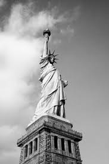
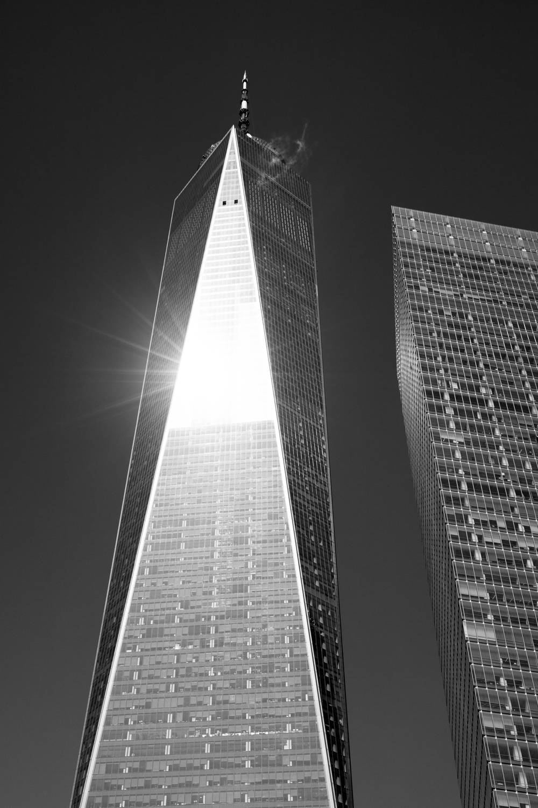
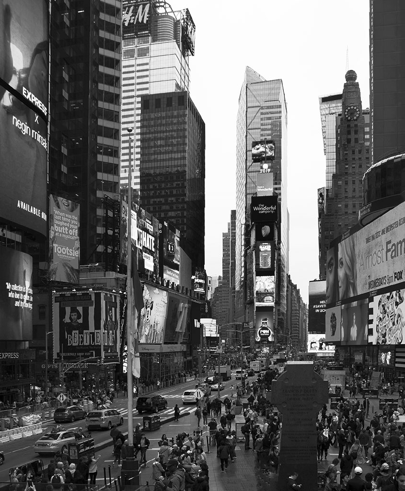
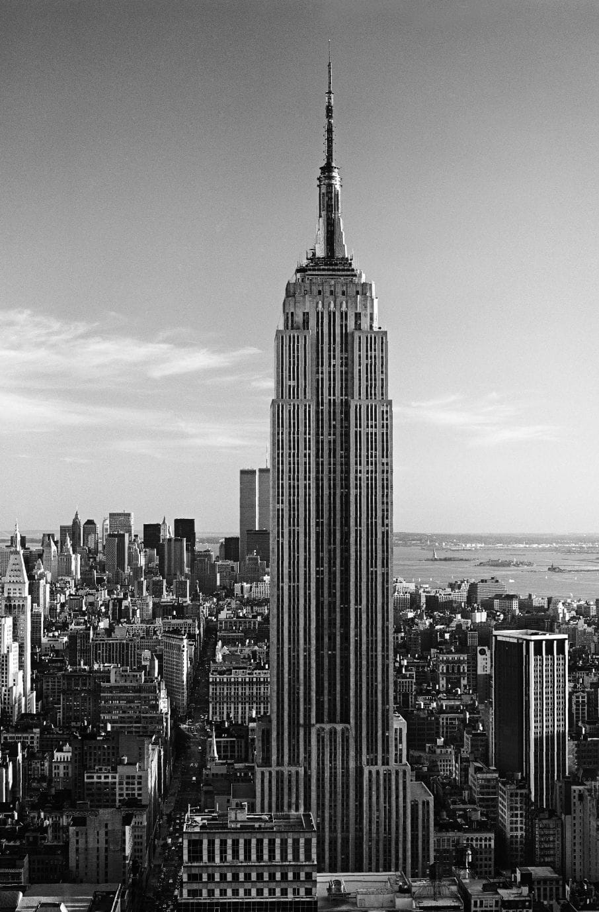

Statua Wolności
Wielki posąg na wyspie Liberty Island tak naprawdę nosi nazwę Liberty Enlightening the World (Wolność opromieniająca świat). Jest znanym na całym świecie symbolem Nowego Jorku, Stanów Zjednoczonych i wolności.
Statua Wolności została wzniesiona w latach 1884-1886. Jej projekt współtworzyli: francuski rzeźbiarz – Frederic August Bartholdi, francuski inżynier – Gustaw Eiffel (odpowiedzialny za konstrukcję) i amerykański architekt – Richard Morris Hunt (autor postumentu).
Sam pomnik kobiety trzymającej w prawej dłoni pochodnię, a w lewej tablicę z datą uzyskania niepodległości przez Stany Zjednoczone stworzył Bartholdi.
Statua Wolności była darem od rządu francuskiego z okazji stulecia uchwalenia Deklaracji niepodległości.

Central Park
W samym sercu Manhattanu znajduje się najsłynniejszy park w Nowym Jorku – Central Park. Przypomina ogromną, symetryczną, zieloną wyspę. Do jej powstania przyczyniło się tempo, w którym rozrastał się Nowy Jork. Władze miasta wytyczyły obszar zielony, by okolica nie zamieniła się w betonową dżunglę.
W Central Parku można uciec od zgiełku wielkiego miasta. Spokój najłatwiej znaleźć w strefie ciszy – Sheep Meadow. Nazwa nie jest przypadkowa – niegdyś łąka była terenem wypasu owiec.
Największym zbiornikiem wodnym w parku jest Rezerwuar Jacqueline Kennedy Onassis – wytyczono wokół niego wygodną trasę do joggingu.
Ogromną popularnością wśród turystów cieszą się Pola Truskawkowe. Są położone naprzeciwko apartamentowca, w którym mieszkał John Lennon.
W Central Parku znajduje się również pomnik... Władysława Jagiełły.

World Trade Center
One World Trade Center (One WTC) jest jednym z najnowszych wieżowców w Nowym Jorku. Zbudowano go w latach 2006 – 2014 w miejscu wcześniejszych budynków WTC, zawalonych w wyniku zamachu 11 września 2001 r. Na szczycie One WTC znajduje się One World Observatory – miejsce, z którego można podziwiać wyjątkową panoramę Manhattanu w 360 stopniach.
Każdego roku 11 września z pobliskiego budynku wysoko w niebo biegną dwa białe światła. Symbolizują one zniszczone wieżowce WTC i upamiętniają ofiary zamachu. Ten wyjątkowy pokaz widać z wielu miejsc na Manhattanie, ale chyba najładniejszy widok jest z Brooklynu po drugiej stronie rzeki, tuż przy Moście Brooklyńskim.

Times Square
Wielkie ekrany, na których migoczą jaskrawe reklamy, ruch, żółte taksówki – na hasło „Times Square” przed oczami staje zazwyczaj taki obrazek. Niegdyś ten nowojorski plac nosił nazwę Longacre Square. Przemianowano go w 1904 r., kiedy do biurowca New York Times Building (dziś One Times Square) przeniosła się redakcja „New York Timesa”.
Times Square zawdzięcza dziennikowi nie tylko nazwę. Właściciel gazety przyczynił się do wybudowania tu stacji metra.
Co roku tłumy nowojorczyków witają na Times Square Nowy Rok.

Empire State Building
Empire State Building z pewnością można uznać za jeden z najbardziej rozpoznawalnych symboli Nowego Jorku. Znany jest z wielu filmów – m.in. „King Konga” czy „Bezsenności w Seattle”.
Wieżowiec został otwarty 1 maja 1931 roku. Jego budowa trwała ledwie 58 tygodni. To nie lada osiągnięcie – ma w końcu 102 piętra i mierzy 381 m (licząc antenę znajdującą się na dachu – ponad 443 m). Przez kilkadziesiąt lat był najwyższym budynkiem na świecie.
